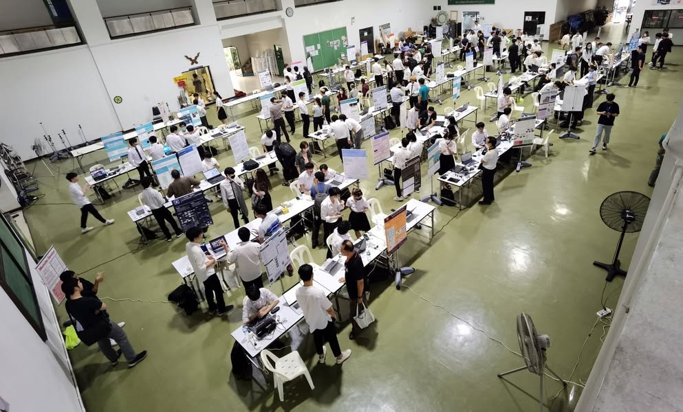

ทำไมเรายังต้องมามหาวิทยาลัย


ก่อนจะไปบรรยายพิเศษให้นิสิตที่สนใจเรื่องข้อมูล ผมได้อ่านข้อถกเถียงเรื่องการเข้าเรียน ในฐานะอาจารย์ที่เคยเจอนิสิตไม่เข้าเรียนเหมือนกัน ผมอยากชวนคิดถึง คุณค่าของการมามหาวิทยาลัย ต่อจากการตัดสินว่าใครถูกหรือผิด
วันนี้ความรู้หาได้ง่าย อยากรู้อะไรก็ถาม AI ได้ บางครั้งอาจตอบได้ดีกว่าอาจารย์เสียอีก และทั้ง AI กับอาจารย์ก็มีโอกาสผิดได้เหมือนกัน ผมจึงอยากชวนมองสิ่งที่เกิดขึ้นเมื่อเราได้มาพบและเรียนรู้ร่วมกันด้วย
ความรู้ชุดเดียวกัน อาจพาเราไปคนละทาง
คนที่พบปัญหาเดียวกัน มีทรัพยากรเหมือนกัน ฟังบรรยายและอ่านตำราเล่มเดียวกัน ค้นกูเกิลได้และใช้ AI ตัวเดียวกัน ยังอาจได้ผลต่างกัน คำตอบอาจอยู่ที่ วิธีมองปัญหา วิธีตั้งคำถาม และการเลือกใช้ความรู้ ซึ่งแต่ละคนมีไม่เหมือนกัน
เราอยากสัมผัสรสมือของคนที่เลือกมาเรียนด้วย
ผมนึกถึงการไปกินข้าวนอกบ้าน เราหุงข้าวเองได้ วัตถุดิบหรือหม้อหุงข้าวที่บ้านอาจดีกว่าที่ร้าน แต่ยังอยากไปลองฝีมือของเขา อยากเห็นว่าเขาเลือกอะไรมาเข้าคู่กันและปรุงอย่างไร เราอยากสัมผัส รสนิยม ที่อาจทำให้อาหารออกมาอร่อยในแบบที่เรานึกไม่ถึง
การมามหาวิทยาลัยก็คล้ายกัน เราได้ความรู้พร้อมกับสัมผัส วิธีคิดของอาจารย์และเพื่อน เห็นว่าเขาหยิบเรื่องไหนมาพูด เชื่อมโยงอะไรเข้าด้วยกัน และมองเห็นอะไรในสิ่งที่เราอ่านผ่านไปแล้ว
คำถามจากเพื่อน เรื่องเล่าจากประสบการณ์ หรือคำทักว่า “แล้วถ้าเป็นอีกแบบล่ะ” อาจพาบทสนทนาไปไกลกว่าที่ตั้งใจ เหมือนไปร้านประจำที่เมนูเดิม แต่คนร่วมโต๊ะและบทสนทนาทำให้แต่ละมื้อแตกต่างกัน เราอาจรู้ว่าจะเรียนเรื่องอะไร แต่ยังไม่รู้ว่าจะได้แง่คิดใดกลับไป บางเรื่องอาจเป็นสิ่งที่ไม่เคยนึกจะถาม AI มาก่อน
การสอบจบที่เปิดให้หลายมุมมองมาพบกัน
ภาพประกอบเป็นการสอบจบของนิสิตวิศวกรรมคอมพิวเตอร์ ซึ่งเราเชิญ อาจารย์ทั้งภาควิชาและศิษย์เก่าที่เป็นผู้ประกอบการ มาร่วม และเปิดให้ ผู้ชมทั่วไป เข้าซักถาม พูดคุย และแลกเปลี่ยนทั้งมุมมอง นามบัตร และรสนิยม สำหรับผม นี่ก็เป็นรสนิยมของที่ทำงานของผมเช่นกัน เป็นพื้นที่ให้อาจารย์ เพื่อน และตัวนิสิตเองมีอะไรมาเติมให้กัน